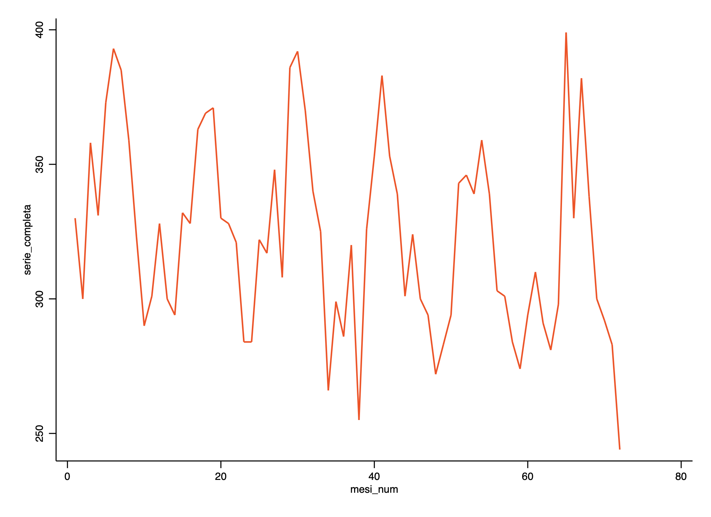
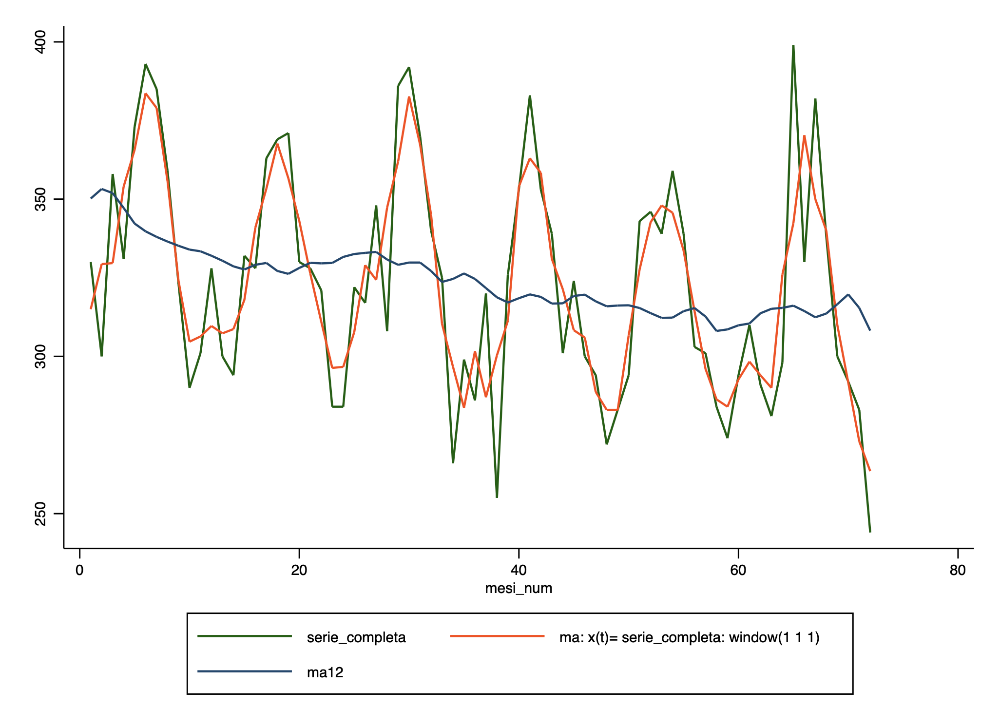
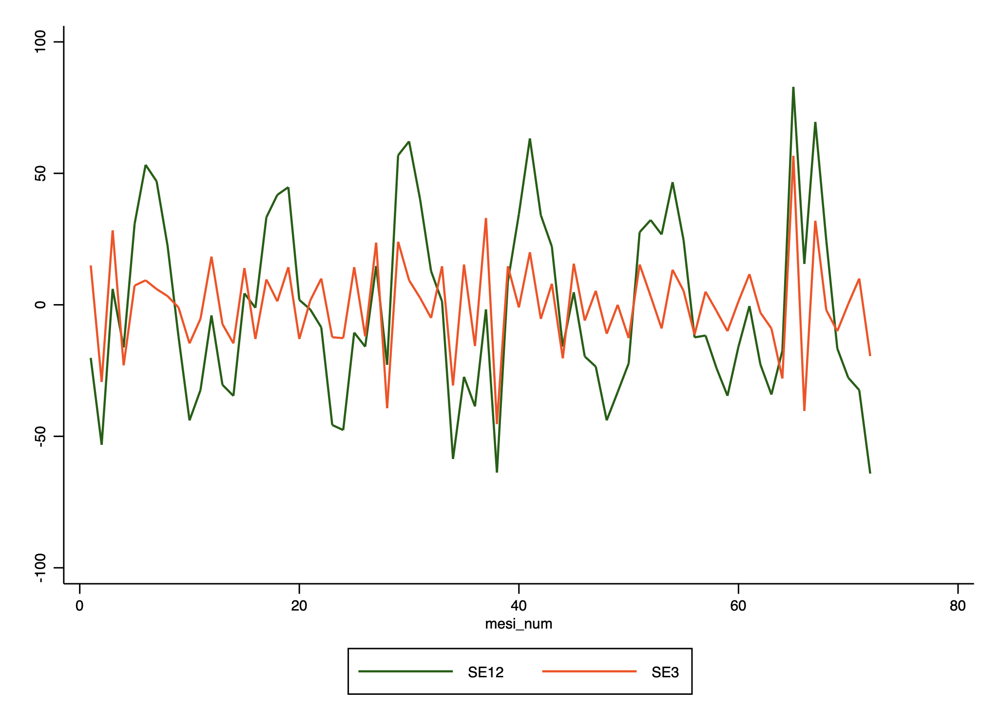
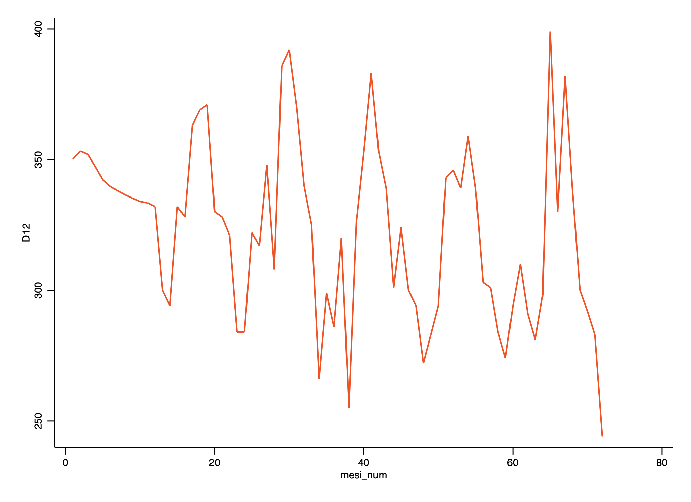
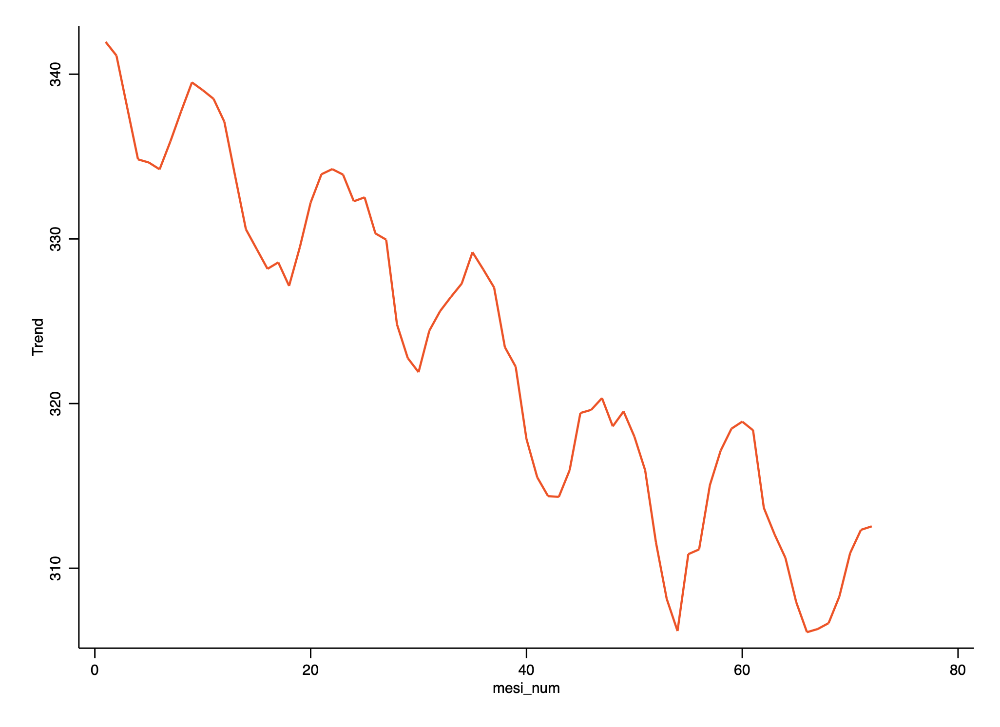

Estimation of the components
. import excel "/Users/simoneboschetti/Desktop/data.xls", sheet("Foglio1") cellrange(A15:J87) firstrow clear
(10 vars, 72 obs)
. tsset mesi_num
Time variable: mesi_num, 1 to 72
Delta: 1 unit

Moving average (period=3)
. tssmooth ma ma3 = serie_completa, window(1 1 1)
The smoother applied was
(1/3)*[x(t-1) + 1*x(t) + x(t+1)]; x(t)= serie_completa
Moving average (period=12)
. tssmooth ma ma121 = serie_completa, window(5 1 6)
The smoother applied was
(1/12)*[x(t-5) + x(t-4) + x(t-3) + x(t-2) + x(t-1) + 1*x(t) + x(t+1) + x(t+2) + x(t+3) + x(t+4) + x(t+5) + ...; x(t)= serie_completa
. tssmooth ma ma122 = serie_completa, window(6 1 5)
The smoother applied was
(1/12)*[x(t-6) + x(t-5) + x(t-4) + x(t-3) + x(t-2) + x(t-1) + 1*x(t) + x(t+1) + x(t+2) + x(t+3) + x(t+4) + ...; x(t)= serie_completa
. gen ma12 =( ma121+ ma122)/2

Gross seasonality
. gen SE3 = serie_completa-ma3
. gen SE12 = serie_completa-ma12

. tsset mese_num
Time variable: mese_num, 1 to 12
Delta: 1 unit
. egen dS1= mean(SE12) if inrange(mese_num, 1, 1)
(71 missing values generated)
. egen dS2= mean(SE12) if inrange(mese_num, 2, 2)
(71 missing values generated)
. egen dS3= mean(SE12) if inrange(mese_num, 3, 3)
(71 missing values generated)
. egen dS4= mean(SE12) if inrange(mese_num, 4, 4)
(71 missing values generated)
. egen dS5= mean(SE12) if inrange(mese_num, 5, 5)
(71 missing values generated)
. egen dS6= mean(SE12) if inrange(mese_num, 6, 6)
(71 missing values generated)
. egen dS7= mean(SE12) if inrange(mese_num, 7, 7)
(71 missing values generated)
. egen dS8= mean(SE12) if inrange(mese_num, 8, 8)
(71 missing values generated)
. egen dS9= mean(SE12) if inrange(mese_num, 9, 9)
(71 missing values generated)
. egen dS10= mean(SE12) if inrange(mese_num, 10, 10)
(71 missing values generated)
. egen dS11= mean(SE12) if inrange(mese_num, 11, 11)
(71 missing values generated)
. egen dS12= mean(SE12) if inrange(mese_num, 12, 12)
(71 missing values generated)
. replace dS1= 0 if (dS1 >= .)
(71 real changes made)
. replace dS2= 0 if (dS2 >= .)
(71 real changes made)
. replace dS3= 0 if (dS3 >= .)
(71 real changes made)
. replace dS4= 0 if (dS4 >= .)
(71 real changes made)
. replace dS5= 0 if (dS5 >= .)
(71 real changes made)
. replace dS6= 0 if (dS6 >= .)
(71 real changes made)
. replace dS7= 0 if (dS7 >= .)
(71 real changes made)
. replace dS8= 0 if (dS8 >= .)
(71 real changes made)
. replace dS9= 0 if (dS9 >= .)
(71 real changes made)
. replace dS10= 0 if (dS10 >= .)
(71 real changes made)
. replace dS11= 0 if (dS11 >= .)
(71 real changes made)
. replace dS12= 0 if (dS12 >= .)
(71 real changes made)
. gen Stag12= dS1+dS2+dS3+dS4+dS5+dS6+dS7+dS8+dS9+dS10+dS11+dS12
. tsset mesi_num
Time variable: mesi_num, 1 to 72
Delta: 1 unit
. gen D12 = serie_completa-Stag12
Trend + stochastic component

. tssmooth ma ma21new = D12, window(10 1 10)
The smoother applied was
(1/21)*[x(t-10) + x(t-9) + x(t-8) + x(t-7) + x(t-6) + x(t-5) + x(t-4) + x(t-3) + x(t-2) + x(t-1) + 1*x(t) + x(t+1) + x(t+2) + x(t+3)
+ x(t+4) + x(t+5) + x(t+6) + x(t+7) + x(t+8) + x(t+9) + ...; x(t)= D12
. gen Trend = ma21new
